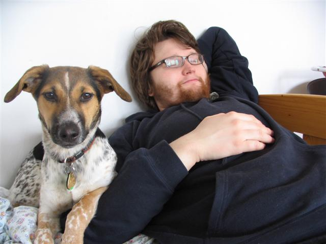
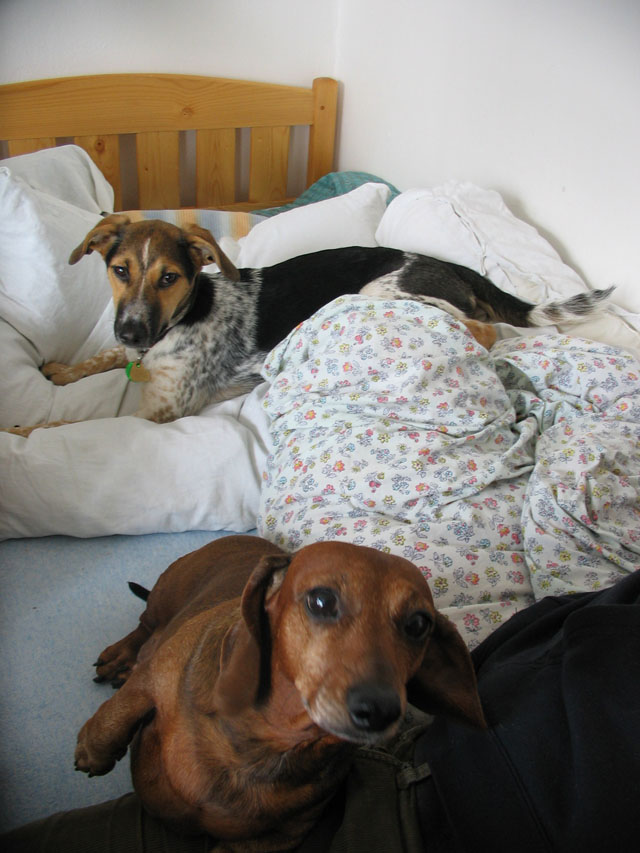
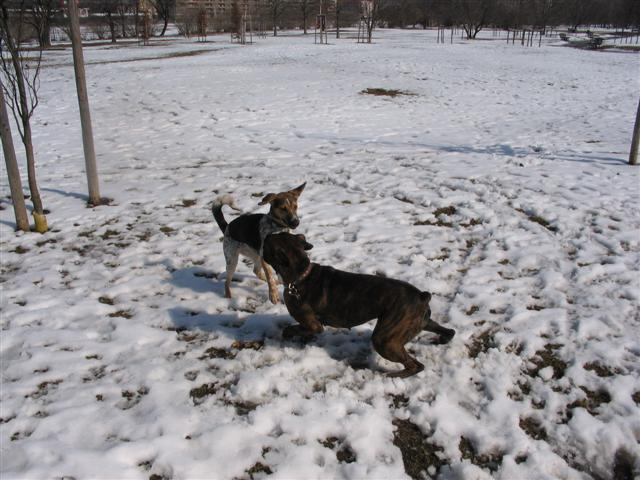
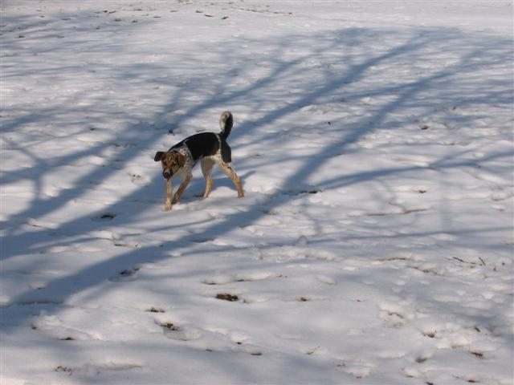
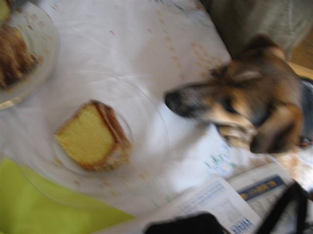
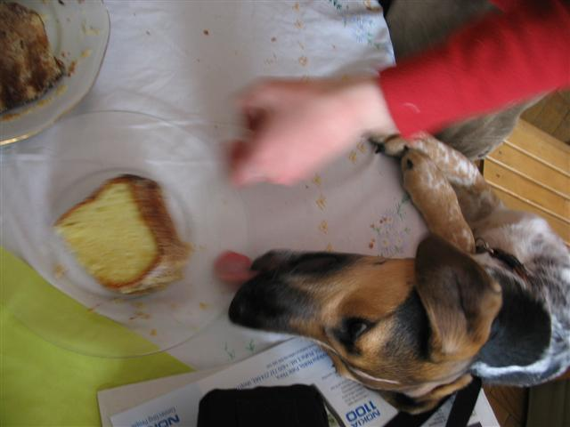
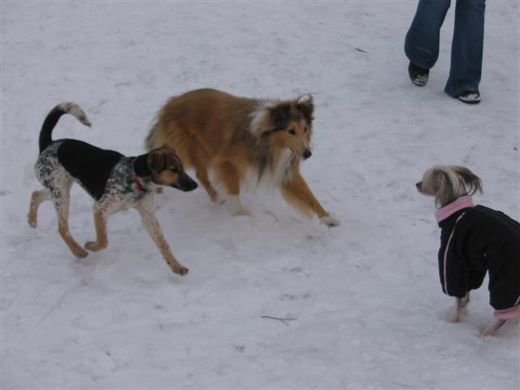
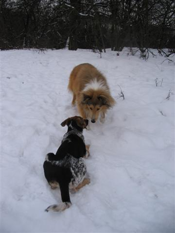
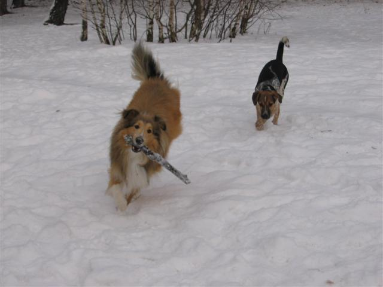
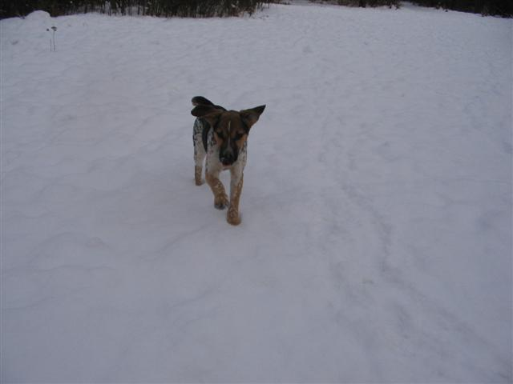

Navigace |
2006: Únor (víceméně) tj. Nela na sněhuNela asi tak čtyřměsíční. S velmi kladným vztahem ke sněhu. Když začal prvně padat vypadalo to, že se ho Nela pokusí sežrat všechen, což se jí kupodivu nepodařilo.  Velmi spokojená Nela - jak jinak než s Rudolfem.
 Rovněž spokojená Nela, neboť zabrala naší (původně trpasličí) jezevčici Dáje postel.  Řádění s boxerkou na Letné
 Další letenská kompozice. POZOR POZOR ! Následují ojedinělé fotky Nely v akci při útoku na bábovku. Jsou sice dost rozmazané, ale jez nich patrná nenápadné vsunutí hlavy na stůl a bravurní práce jazykem.

 Zimní procházka s kamarádem Ediem.
 Naháč se tváří poněkud nejistě, protože Nela s Edýskem se k němu přiřítili poněkud živelně.
 Nela jako obvykle číhající ( i když tentokrát hlavně proto, že jí Edýsek uběhal).  Nela nestíhá a Edýsek s klackem se vzdaluje...
 Létající Čestmír Nela
|